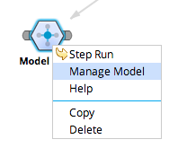
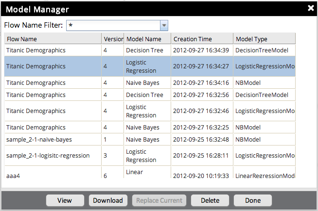

Open a flow, right click a Model Operator and click the Manage Model menu item, to open the Model Management Dialog.

The Model Manager displays all of the models in the system. You can use the Name Filter to filter the results.
Selecting "*" will display all of the models.
Click the View button to see selected flow's visualization.
Click the Download button to save the model to the local file system.
Click the Replace Current button to use selected model to replace the model in current flow. (This feature is only available if the Model Operator is first operator in a flow.)